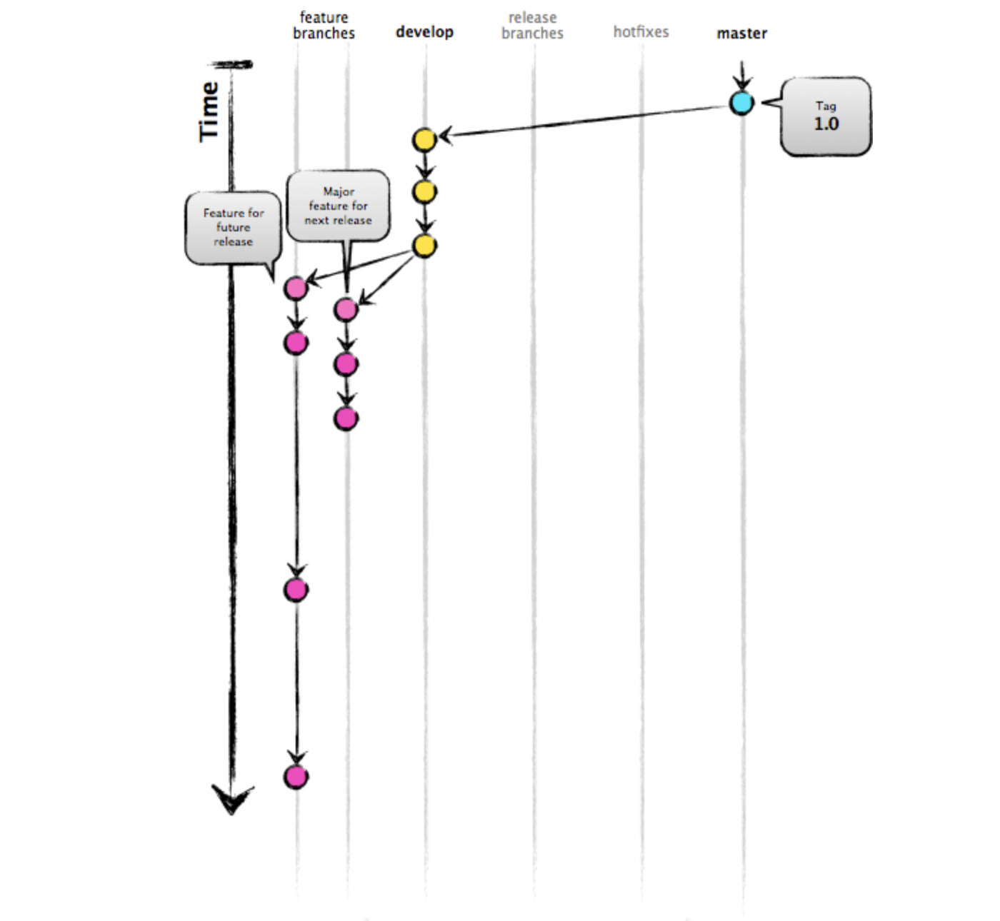
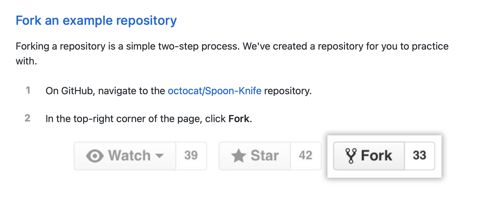
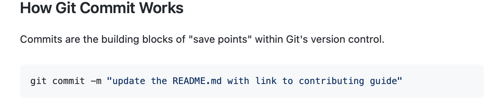
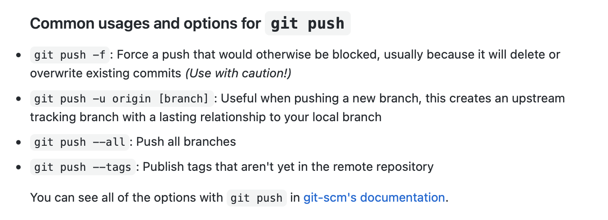
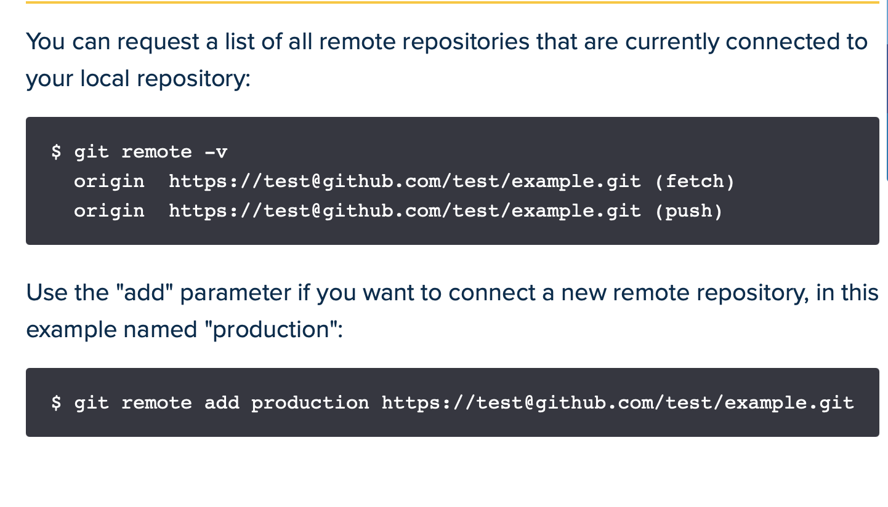

GitFlow is a branching model for Git, created by Vincent Driessen. It has attracted a lot of attention because it is very well suited to collaboration and scaling the development team
Key benefits:
How it works
Contains all the project files and stores each file's revision history. Example is by creating new respository on the top right corner of the github screen.
We can initialize an repo using git init
A copy of a respiratory that lives on your computer instead of on website's server somewhere, or act of making that copy.
You clone a repo with git clone <url>.
A fork is a copy of a repository that maintains a link with the origin repository so changes can be sent back to the original repository, even if it is on a different account. This allows people to work on their own repositories and selectively submit changes back to the original.
make changes to someone else's project
Branches allow you to develop features, fix bugs, or safely experiment with new ideas in a contained area of your repository. The git branch command lets you create, list, rename, and delete branches. It doesn’t let you switch between branches or put a forked history back together again.
By default, GitHub names the default branch main in any new repository.
git commit creates a commit, which is like a snapshot of your repository. These commits are snapshots of your entire repository at specific times. You should make new commits often, based around logical units of change.
Merge a pull request into the upstream branch when work is completed. Anyone with push access to the repository can complete the merge.
In Git terms, a "checkout" is the act of switching between different versions of a target entity. The git checkout command operates upon three distinct entities: files, commits, and branches. In addition to the definition of "checkout" the phrase "checking out" is commonly used to imply the act of executing the git checkout command.
git push updates the remote branch with local commits. It is one of the four commands in Git that prompts interaction with the remote repository. You can also think of git push as update or publish.
The git push command is used to transfer or push the commit, which is made on a local branch in your computer to a remote repository like GitHub. The command used for pushing to GitHub is given below. git push 'remote_name' 'branch_name'
It creates a new connection to a remote repository.
Status checks are based on external processes, such as continuous integration builds, which run for each push you make to a repository.
The default development branch. Whenever you create a Git repository, a branch named "master" is created, and becomes the active branch. In most cases, this contains the local development, though that is purely by convention and is not required.